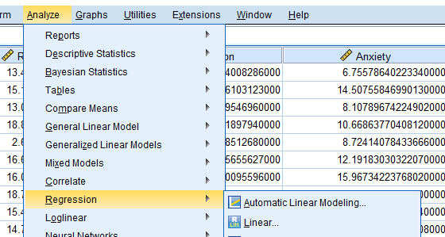

<!DOCTYPE html>
<html lang="en">
  <head>
    <meta charset="utf-8" />
    <meta name="viewport" content="width=device-width, initial-scale=1.0, maximum-scale=1.0, user-scalable=no" />

    <title></title>
    <link rel="stylesheet" href="dist/reveal.css" />
    <link rel="stylesheet" href="dist/theme/serif.css" id="theme" />
    <link rel="stylesheet" href="plugin/highlight/zenburn.css" />
	<link rel="stylesheet" href="css/layout.css" />
	<link rel="stylesheet" href="plugin/customcontrols/style.css">
	<link rel="stylesheet" href="plugin/chalkboard/style.css">


    <script defer src="dist/fontawesome/all.min.js"></script>

	<script type="text/javascript">
		var forgetPop = true;
		function onPopState(event) {
			if(forgetPop){
				forgetPop = false;
			} else {
				parent.postMessage(event.target.location.href, "app://obsidian.md");
			}
        }
		window.onpopstate = onPopState;
		window.onmessage = event => {
			if(event.data == "reload"){
				window.document.location.reload();
			}
			forgetPop = true;
		}

		function fitElements(){
			const itemsToFit = document.getElementsByClassName('fitText');
			for (const item in itemsToFit) {
				if (Object.hasOwnProperty.call(itemsToFit, item)) {
					var element = itemsToFit[item];
					fitElement(element,1, 1000);
					element.classList.remove('fitText');
				}
			}
		}

		function fitElement(element, start, end){

			let size = (end + start) / 2;
			element.style.fontSize = `${size}px`;

			if(Math.abs(start - end) < 1){
				while(element.scrollHeight > element.offsetHeight){
					size--;
					element.style.fontSize = `${size}px`;
				}
				return;
			}

			if(element.scrollHeight > element.offsetHeight){
				fitElement(element, start, size);
			} else {
				fitElement(element, size, end);
			}		
		}


		document.onreadystatechange = () => {
			fitElements();
			if (document.readyState === 'complete') {
				if (window.location.href.indexOf("?export") != -1){
					parent.postMessage(event.target.location.href, "app://obsidian.md");
				}
				if (window.location.href.indexOf("print-pdf") != -1){
					let stateCheck = setInterval(() => {
						clearInterval(stateCheck);
						window.print();
					}, 250);
				}
			}
	};


        </script>
  </head>
  <body>
    <div class="reveal">
      <div class="slides"><section  data-markdown><script type="text/template"><!-- .slide: class="drop" -->
<div class="" style="position: absolute; left: 0px; top: 0px; height: 800px; width: 1000px; min-height: 800px; display: flex; flex-direction: column; align-items: center; justify-content: center" absolute="true">

<div class="has-light-background" style="background-color: rosybrown; position: absolute; left: 0%; top: 0%; height: 40%; width: 100%; display: flex; flex-direction: column; align-items: center; justify-content: center" >

### Partial and Semi-partial Correlations: A Sharing Session
</div>

<div class="has-light-background" style="background-color: bisque; position: absolute; left: 0%; top: 40%; height: 60%; width: 100%; display: flex; flex-direction: column; align-items: center; justify-content: space-evenly" align="justify">
 
Author: Pang Khong Yun
<split> Subject: PSY5024 Intermediate & Advanced Statistics
<split> Lecturer: Dr Lin Mei Hua
</div>
</div></script></section><section  data-markdown><script type="text/template"><!-- .slide: class="drop" -->
<div class="" style="position: absolute; left: 0px; top: 0px; height: 800px; width: 1000px; min-height: 800px; display: flex; flex-direction: column; align-items: center; justify-content: center" absolute="true">

### Key Definition
<split left= "6" right= "10" gap= "1">


<div class="has-light-background" style="background-color: rosybrown" >

- **Partial correlation** control for *both* independent and dependent variables.  
<br>
<br>
<br> 
<br>
<br>
- **Semi-partial correlation** control for *only* independent variable.
</split></div>
</div></script></section><section  data-markdown><script type="text/template"><!-- .slide: class="drop" -->
<div class="" style="position: absolute; left: 0px; top: 0px; height: 800px; width: 1000px; min-height: 800px; display: flex; flex-direction: column; align-items: center; justify-content: center" absolute="true">

### Example Study
<br>
<br>
<div class="" style="display: flex; flex-direction: column; align-items: center; justify-content: space-evenly" align="justify">

Harrington, J.A. and Blankenship, V. (2002). Ruminative Thoughts and Their Relation to Depression and Anxiety. *Journal of Applied Social Psychology*, *32*, 465-485. https://doi.org/10.1111/j.1559-1816.2002.tb00225.x
</div>
<br>
<div class="has-light-background" style="background-color: bisque; display: flex; flex-direction: column; align-items: center; justify-content: center" align="center">

A study about *rumination* **(IV)**, *depression* **(CV & DV)**, and *anxiety* **(CV & DV)**
</div>
</div></script></section><section  data-markdown><script type="text/template"><!-- .slide: class="has-light-background drop" data-background-color="bisque" -->
<div class="" style="position: absolute; left: 0px; top: 0px; height: 800px; width: 1000px; min-height: 800px; display: flex; flex-direction: column; align-items: center; justify-content: center" absolute="true">

<br>
<br>

### Theoretical Definition
<br>
<br>
<br>
<br>

<div class="" style="display: flex; flex-direction: column; align-items: center; justify-content: space-evenly" align="justify">

Rmuination: Repeated thoughts that are bothersome  
Depression: Loss of interest, sad, blue   
Anxiety: A feeling of tension and worried thoughts
</div>
</div></script></section><section  data-markdown><script type="text/template"><!-- .slide: class="drop" -->
<div class="" style="position: absolute; left: 0px; top: 0px; height: 800px; width: 1000px; min-height: 800px; display: flex; flex-direction: column; align-items: center; justify-content: center" absolute="true">

<div class="has-light-background" style="background-color: rosybrown" >

### Background
<br>
<br>

- The correlation between anxiety and depression is rarely below 0.50. <!-- .element: class="fragment" data-fragment-index="1" -->
-  Negative thoughts in depression occur automatically and are quite difficult to turn off. <!-- .element: class="fragment" data-fragment-index="2" -->
-  Ruminative response style was not found to predict change in depression severity. <!-- .element: class="fragment" data-fragment-index="3" -->
-  People who use the ruminative response style and who are depressed have been found to report high anxiety. <!-- .element: class="fragment" data-fragment-index="4" -->
-  Automatic cognitive processes to be symptoms of both depression and anxiety <!-- .element: class="fragment" data-fragment-index="5" -->
</div>
</div></script></section><section  data-markdown><script type="text/template"><!-- .slide: class="drop" -->
<div class="" style="position: absolute; left: 0px; top: 0px; height: 800px; width: 1000px; min-height: 800px; display: flex; flex-direction: column; align-items: center; justify-content: center" absolute="true">

### Research Hypothesis

<br>
<br>

<div class="has-light-background" style="background-color: bisque; display: flex; flex-direction: column; align-items: center; justify-content: space-evenly" align="justify">

There is a **positive significant** partial correlation between *rumination* and *depression* by holding *anxiety* **constant**.
</div>
</div></script></section><section  data-markdown><script type="text/template"><!-- .slide: class="drop" -->
<div class="" style="position: absolute; left: 0px; top: 0px; height: 800px; width: 1000px; min-height: 800px; display: flex; flex-direction: column; align-items: center; justify-content: center" absolute="true">

### Instruments
<br>
<br>

- Rumination: *Rumination scale* [1]
- Depression: *Beck Depression Inventory-Second Edition* (BDI-II) [2]
- Anxiety: *Beck Anxiety lnventory* (BAI) [3]
<br>
<br>

```
[1] McIntosh & Martin (1992) 
[2] Beck et al. (1996)  
[3] Beck & Steer (1993)
```
</div></script></section><section  data-markdown><script type="text/template"><!-- .slide: class="has-light-background drop" data-background-color="rosybrown" -->
<div class="" style="position: absolute; left: 0px; top: 0px; height: 800px; width: 1000px; min-height: 800px; display: flex; flex-direction: column; align-items: center; justify-content: center" absolute="true">

### Monte Carlo Simulation 

```{r}
library(JWileymisc)
library(MASS)
library(dplyr)
# Specify correlations matrix
V <- matrix(c(1, 0.33, 0.32, 0.33, 1, 0.56, 0.32, 0.56, 1), nrow = 3, ncol = 3)  
# Specify standard deviation
std <- c(7.86, 7.00, 7.58)   
# Specify mean
mu <- c(12.68, 9.46, 9.42) 
# Specify variance-covariance
sigma <- cor2cov(V, std) 
# Generate random samples 
# Set constant simulated result 
set.seed(422) 
# Simulate 5000 samples     
sample5000 <- mvrnorm(n = 5000, mu, sigma, empirical = TRUE) 
# Put the generated samples into data frame Fsample <- as.data.frame(sample5000) 
# Rename variable names 
FFsample <- rename(Fsample, c(Rumination = V1, Depression = V2, Anxiety = V3))
```
</div></script></section><section  data-markdown><script type="text/template"><!-- .slide: class="drop" -->
<div class="" style="position: absolute; left: 0px; top: 0px; height: 800px; width: 1000px; min-height: 800px; display: flex; flex-direction: column; align-items: center; justify-content: center" absolute="true">

### Data frame
<split left="1" right="2" gap="2" >


</split>
</div></script></section><section  data-markdown><script type="text/template"><!-- .slide: class="has-light-background drop" data-background-color="rosybrown" -->
<div class="" style="position: absolute; left: 0px; top: 0px; height: 800px; width: 1000px; min-height: 800px; display: flex; flex-direction: column; align-items: center; justify-content: center" absolute="true">

### Robustness Checks
<br>
<br>
<div class="has-light-background" style="background-color: bisque; display: flex; flex-direction: column; align-items: center; justify-content: space-evenly" align="justify">

**Assumption 1**: At least 1 IV and 1 DV. All measured using continous scale.
<br>
<br>
*Fulfilled*. Rumination (IV), Depression (DV), and Anxiety (DV).
<br>
<br>
**Assumption 2**: At least 1 control variables.
<br>
<br>
*Fulfilled*. Depression and Anxiety.
</div>
</div></script></section><section  data-markdown><script type="text/template"><!-- .slide: class="has-light-background drop" data-background-color="rosybrown" -->
<grid absolute="true" drag="100 100" drop="0 0">
<div class="" style="display: flex; flex-direction: column; align-items: center; justify-content: space-evenly" align="justify">

**Assumption 3**: The presence of the outliers.

<br>
<br>
<br>

```{r}
# Plot outliers
boxplot(FFsample)$out
###################Rumination##########################
# Eliminate outliers
Q <- quantile(FFsample$Rumination, probs=c(.25, .75), na.rm = FALSE)
# Calculate Interquartile Range
iqr <- IQR(FFsample$Rumination)
# Specify the upper and lower range
up <-  Q[2]+1.5*iqr # Upper Range  
low<- Q[1]-1.5*iqr # Lower Range
# how to remove outliers in r (the removal)
eliminated <- subset(FFsample, FFsample`$Rumination > (Q[1] - 1.5*iqr) & FFsample$`Rumination < (Q[2]+1.5*iqr))
# Visualize without outlier
boxplot(eliminated)$out
###################Depression#########################
# Eliminate outliers
Q <- quantile(eliminated$Depression, probs=c(.25, .75), na.rm = FALSE)
# Calculate Interquartile Range
iqr <- IQR(eliminated$Depression)
# how to remove outliers in r (the removal)
eliminated1 <- subset(eliminated, eliminated`$Depression > (Q[1] - 1.5*iqr) & eliminated$`Depression < (Q[2]+1.5*iqr))
# Visualize without outlier
boxplot(eliminated1)$out
###################Anxiety#########################
# Eliminate outliers
Q <- quantile(eliminated1$Anxiety, probs=c(.25, .75), na.rm = FALSE)
# Calculate Interquartile Range
iqr <- IQR(eliminated1$Anxiety)
# how to remove outliers in r (the removal)
eliminated2 <- subset(eliminated1, eliminated1`$Anxiety > (Q[1] - 1.5*iqr) & eliminated1$`Anxiety < (Q[2]+1.5*iqr))
# Visualize without outlier
boxplot(eliminated2)$out
```
</div></script></section><section  data-markdown><script type="text/template"><!-- .slide: class="drop" -->
<div class="" style="position: absolute; left: 0px; top: 0px; height: 800px; width: 1000px; min-height: 800px; display: flex; flex-direction: column; align-items: center; justify-content: center" absolute="true">

<div class="" style="position: absolute; left: 0%; top: 0%; height: 100%; width: 50%; display: flex; flex-direction: column; align-items: center; justify-content: center" >


</div>
<div class="" style="position: absolute; left: 50%; top: 0%; height: 100%; width: 50%; display: flex; flex-direction: column; align-items: center; justify-content: space-evenly" align="justify">

- A total of *100* cases **(2%)** are deleted to remove all the outliers
- Original *5000* sample was used.
	- The results are the same **(uninfluential outliers)**
	- kurtosis is violated **(without outliers)**
</div>
</div></script></section><section  data-markdown><script type="text/template"><!-- .slide: class="has-light-background drop" data-background-color="rosybrown" -->
<div class="" style="position: absolute; left: 0px; top: 0px; height: 800px; width: 1000px; min-height: 800px; display: flex; flex-direction: column; align-items: center; justify-content: center" absolute="true">

<div class="" style="display: flex; flex-direction: column; align-items: center; justify-content: space-evenly" align="justify">

<split even gap="2">


**Assumption 4** Linear relationship.
</split>
</div>
</div></script></section><section  data-markdown><script type="text/template"><!-- .slide: class="has-light-background drop" data-background-color="rosybrown" -->
<div class="" style="position: absolute; left: 0px; top: 0px; height: 800px; width: 1000px; min-height: 800px; display: flex; flex-direction: column; align-items: center; justify-content: center" absolute="true">

<div class="" style="display: flex; flex-direction: column; align-items: center; justify-content: space-evenly" align="justify">

**Assumption 5**: Normal distribution.
</div>
<split even gap="2">


</split>
</div></script></section><section  data-markdown><script type="text/template"><!-- .slide: class="drop" -->
<div class="" style="position: absolute; left: 0px; top: 0px; height: 800px; width: 1000px; min-height: 800px; display: flex; flex-direction: column; align-items: center; justify-content: center" absolute="true">

### SPSS Practice
</div></script></section><section  data-markdown><script type="text/template"><!-- .slide: class="has-light-background drop" data-background-color="bisque" -->
<div class="" style="position: absolute; left: 0px; top: 0px; height: 800px; width: 1000px; min-height: 800px; display: flex; flex-direction: column; align-items: center; justify-content: center" absolute="true">

### Step 1: Click "Analyze"

</div></script></section><section  data-markdown><script type="text/template"><!-- .slide: class="has-light-background drop" data-background-color="bisque" -->
<div class="" style="position: absolute; left: 0px; top: 0px; height: 800px; width: 1000px; min-height: 800px; display: flex; flex-direction: column; align-items: center; justify-content: center" absolute="true">

### Step 2: Click "Regression"

</div></script></section><section  data-markdown><script type="text/template"><!-- .slide: class="has-light-background drop" data-background-color="bisque" -->
<div class="" style="position: absolute; left: 0px; top: 0px; height: 800px; width: 1000px; min-height: 800px; display: flex; flex-direction: column; align-items: center; justify-content: center" absolute="true">

### Step 3: Click "Linear"

</div></script></section><section  data-markdown><script type="text/template"><!-- .slide: class="has-light-background drop" data-background-color="bisque" -->
<div class="" style="position: absolute; left: 0px; top: 0px; height: 800px; width: 1000px; min-height: 800px; display: flex; flex-direction: column; align-items: center; justify-content: center" absolute="true">

### Step 4: Input variables
Put the control variables in independent variable box

</div></script></section><section  data-markdown><script type="text/template"><!-- .slide: class="has-light-background drop" data-background-color="bisque" -->
<div class="" style="position: absolute; left: 0px; top: 0px; height: 800px; width: 1000px; min-height: 800px; display: flex; flex-direction: column; align-items: center; justify-content: center" absolute="true">

### Step 5: Click "Statistic"

</div></script></section><section  data-markdown><script type="text/template"><!-- .slide: class="has-light-background drop" data-background-color="bisque" -->
<div class="" style="position: absolute; left: 0px; top: 0px; height: 800px; width: 1000px; min-height: 800px; display: flex; flex-direction: column; align-items: center; justify-content: center" absolute="true">

### Step 6: Check "Part and partial correlations"

</div></script></section><section  data-markdown><script type="text/template"><!-- .slide: class="has-light-background drop" data-background-color="bisque" -->
<div class="" style="position: absolute; left: 0px; top: 0px; height: 800px; width: 1000px; min-height: 800px; display: flex; flex-direction: column; align-items: center; justify-content: center" absolute="true">

### Step 7: Click "OK" or "Paste"

</div></script></section><section  data-markdown><script type="text/template"><!-- .slide: class="has-light-background drop" data-background-color="bisque" -->
<div class="" style="position: absolute; left: 0px; top: 0px; height: 800px; width: 1000px; min-height: 800px; display: flex; flex-direction: column; align-items: center; justify-content: center" absolute="true">

### SPSS Syntax

```{spss}
# Control for anxiety 
REGRESSION 
	/MISSING LISTWISE 
	/STATISTICS COEFF OUTS R ANOVA ZPP 
    /CRITERIA=PIN(.05) POUT(.10) 
	/NOORIGIN 
	/DEPENDENT Depression 
	/METHOD=ENTER Rumination Anxiety 
# Control for depression 
REGRESSION 
	/MISSING LISTWISE 
	/STATISTICS COEFF OUTS R ANOVA ZPP 
    /CRITERIA=PIN(.05) POUT(.10) 
	/NOORIGIN 
	/DEPENDENT Anxiety 
	/METHOD=ENTER Rumination Depression.
```
</div></script></section><section  data-markdown><script type="text/template"><!-- .slide: class="has-light-background drop" data-background-color="bisque" -->
<div class="" style="position: absolute; left: 0px; top: 0px; height: 800px; width: 1000px; min-height: 800px; display: flex; flex-direction: column; align-items: center; justify-content: center" absolute="true">

### SPSS output

</div></script></section><section  data-markdown><script type="text/template"><!-- .slide: class="drop" -->
<div class="" style="position: absolute; left: 0px; top: 0px; height: 800px; width: 1000px; min-height: 800px; display: flex; flex-direction: column; align-items: center; justify-content: center" absolute="true">

### How to Report Partial Correlation
<br>
<br>
<div class="has-light-background" style="background-color: rosybrown; display: flex; flex-direction: column; align-items: center; justify-content: space-evenly" align="justify">

When we control ***anxiety*** on the relationship between ***rumination*** and ***depression***. We found that ***rumination*** has a **positive** **significant** partial correlation with ***depression*** (*r* = 0.18, *p* = < 0.001).
</div>
</div></script></section><section  data-markdown><script type="text/template"><!-- .slide: class="drop" -->
<div class="" style="position: absolute; left: 0px; top: 0px; height: 800px; width: 1000px; min-height: 800px; display: flex; flex-direction: column; align-items: center; justify-content: center" absolute="true">

# Thank you
</div></script></section></div>
    </div>

    <script src="dist/reveal.js"></script>

    <script src="plugin/markdown/markdown.js"></script>
    <script src="plugin/highlight/highlight.js"></script>
    <script src="plugin/zoom/zoom.js"></script>
    <script src="plugin/notes/notes.js"></script>
    <script src="plugin/math/math.js"></script>
	<script src="plugin/mermaid/mermaid.js"></script>
	<script src="plugin/chart/chart.min.js"></script>
	<script src="plugin/chart/plugin.js"></script>
	<script src="plugin/menu/menu.js"></script>
	<script src="plugin/customcontrols/plugin.js"></script>
	<script src="plugin/chalkboard/plugin.js"></script>

    <script>
      function extend() {
        var target = {};
        for (var i = 0; i < arguments.length; i++) {
          var source = arguments[i];
          for (var key in source) {
            if (source.hasOwnProperty(key)) {
              target[key] = source[key];
            }
          }
        }
        return target;
      }

	  function isLight(color) {
		let hex = color.replace('#', '');

		// convert #fff => #ffffff
		if(hex.length == 3){
			hex = `${hex[0]}${hex[0]}${hex[1]}${hex[1]}${hex[2]}${hex[2]}`;
		}

		const c_r = parseInt(hex.substr(0, 2), 16);
		const c_g = parseInt(hex.substr(2, 2), 16);
		const c_b = parseInt(hex.substr(4, 2), 16);
		const brightness = ((c_r * 299) + (c_g * 587) + (c_b * 114)) / 1000;
		return brightness > 155;
	}

	var bgColor = getComputedStyle(document.documentElement).getPropertyValue('--r-background-color').trim();
	var isLight = isLight(bgColor);

	if(isLight){
		document.body.classList.add('has-light-background');
	} else {
		document.body.classList.add('has-dark-background');
	}

      // default options to init reveal.js
      var defaultOptions = {
        controls: true,
        progress: true,
        history: true,
        center: true,
        transition: 'default', // none/fade/slide/convex/concave/zoom
        plugins: [
          RevealMarkdown,
          RevealHighlight,
          RevealZoom,
          RevealNotes,
          RevealMath.MathJax3,
		  RevealMermaid,
		  RevealChart,
		  RevealCustomControls,
		  RevealMenu,
		  RevealChalkboard, 
        ],


    	allottedTime: 120 * 1000,

		mathjax3: {
			mathjax: 'plugin/math/mathjax/tex-mml-chtml.js',
		},
		markdown: {
		  gfm: true,
		  mangle: true,
		  pedantic: false,
		  smartLists: false,
		  smartypants: false,
		},

		mermaid: {
			theme: isLight ? 'default' : 'dark',
		},

		customcontrols: {
			controls: [
				{ icon: '<i class="fa fa-pen-square"></i>',
				title: 'Toggle chalkboard (B)',
				action: 'RevealChalkboard.toggleChalkboard();'
				},
				{ icon: '<i class="fa fa-pen"></i>',
				title: 'Toggle notes canvas (C)',
				action: 'RevealChalkboard.toggleNotesCanvas();'
				},
			]
		},
		menu: {
			loadIcons: false
		}
      };

      // options from URL query string
      var queryOptions = Reveal().getQueryHash() || {};

      var options = extend(defaultOptions, {"width":1000,"height":800,"margin":0.04,"controls":true,"progress":true,"slideNumber":true,"transition":"slide","transitionSpeed":"default"}, queryOptions);
    </script>

    <script>
      Reveal.initialize(options);
    </script>
  </body>

  <!-- created with Advanced Slides -->
</html>
